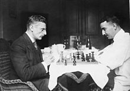

| Tabletop games or tabletops are games that are normally played on a table or other flat surface, such as board games, card games, dice games, miniature wargames, tabletop role-playing games, or tile-based games. |  |
|---|
Tabletop games can be classified according to the general form, or
equipment utilized:
| Game category | Game example |
|---|---|
| Board games | Adventure board games, adventure gamebooks, backgammon, chess, German-style board games, go, reversi, Mancala, Shogi, Gomoku, Four-in-a-row (or Yonmoku), Tic-tac-toe (or Sanmoku, Three-in-a-row) |
| Card games | solitaire, collectible card games, hanafuda, tarot card games, poker |
| Dexterity games | games Jenga, Crokinole, Klask, Hungry Hungry Hippos, Loopin' Louie, Terror in Meeple City, Don't Break the Ice, Crossbows and Catapults, Knucklebones, Twister, PitchCar |
| Dice games | bunco, craps, poker dice, sic bo, yahtzee |
| Paper and pencil games | Battleship, Connect 5, dots and boxes, hangman, sprouts, sudoku |
| Tabletop role-playing games | Dungeons & Dragons, Pathfinder Roleplaying Game |
| Strategy games | wargames, government simulation games, miniatures games |
| Tile-based games | 15 puzzle, anagrams, dominoes, mahjong, mahjong solitaire |
| Tabletop sports | See article. |
Games like chess and draughts are examples of games belonging to the board game category. Other games, however, use various attributes and cannot be classified unambiguously (e.g. Monopoly and many modern eurogames utilize a board as well as dice and cards).
For several of these categories there are sub-categories and even sub-sub-categories or genres. For instance, German-style board games, board wargames, and roll-and-move games are all types of board games that differ markedly in style and general interest
The various specialized parts, pieces, and tools used for playing tabletop games may include:
This stuf is only the basics of TB games, you can find more about this topic here on Wikipedia
{kind=link}